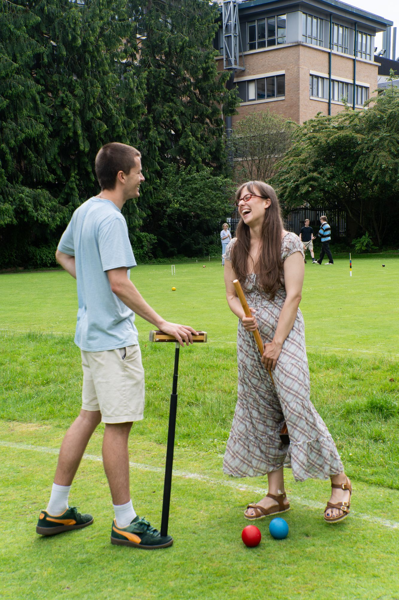

General Information
The Club uses the two full-size courts in The University Parks. The courts open for play on the Saturday of 0th Week Trinity term. There is an online booking system for the courts, which members are granted access to upon registering. No equipment may be taken away from the courts except for use in official Club matches.
The croquet club-hut contains all the equipment required and all you need are flat-soled shoes to prevent damage to the courts. The hut is also stocked with coaching material and has a large notice board advertising events, equipment, etc.
All members should read the Croquet Byelaws.
Once you are accepted as a member you will receive your membership card, key if requested, lawn booking login, and information about the season's activities in the Club.
Members can use the courts at any time, except when there are matches or coaching taking place. (Tuesday & Thursdays, 5-6 p.m. weeks 1-4) - see the fixture calendar for further details.
Membership options
There are two options for membership: Trinity term membership and the whole of the summer (including Trinity term). Members who sign up by the end of Michaelmas term get an early bird discount.
Any member can also pay a deposit and receive a key to access the hut outside of club nights. The deposit is currently £6 and is additional to the membership fee.
| Membership type | Standard |
|---|---|
| A. OU Student Trinity term | £12 |
| B. OU Student All summer | £24 |
| C. OU member, non-student | £36 |
| D. Non-OU member & alumni | £56 |
The full season is from First Week - 30th September. 1st week changes with the religious calendar year by year.
Non-University members and alumni
The Club welcomes experienced non-University and alumni croquet players. This arises because the Club is unable to coach novices other than at the start of the season (that free coaching is open to non-University people!) The University also puts a restraint on the number of non-University members, including alumni, a club may contain (currently 20%). However, no distinction is made between players once they are members, and everyone is encouraged to participate fully in the Club. Please contact the Secretary, if you are interested in joining the Club. Ignore the form below.
Club bank details
Account name: Oxford University Croquet ClubAccount no: 50541048
Sort code: 54-21-23
Application form
Please contact the Secretary for any queries.